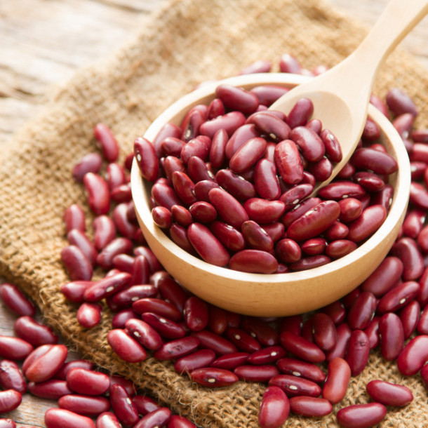
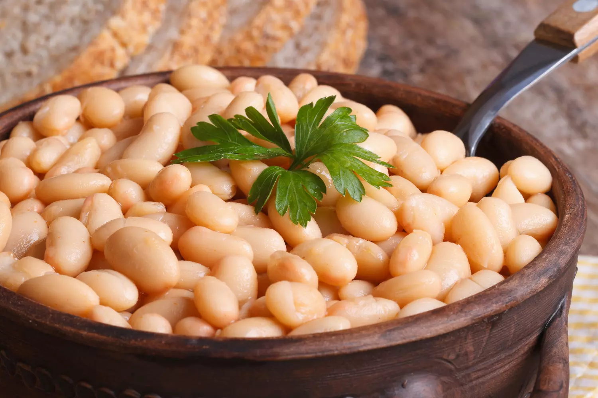

Qu'est ce qu'un haricot ?
Le Haricot, ou Haricot commun (Phaseolus vulgaris L.), est une espèce de plantes annuelles de la famille des Fabaceae (Légumineuses, Papilionacées), du genre Phaseolus, couramment cultivée comme légume. On en consomme soit le fruit (la gousse, dans les haricots verts ou « mange-tout »), soit les graines, riches en protéines. Le terme « haricot » s'applique à l'ensemble des parties consommées (gousse ou grain). Il faut savoir qu'il existe 84 types d'haricots
Les 3 espèces d'haricots les plus utilisées

Haricot Vert

Haricot Rouge
